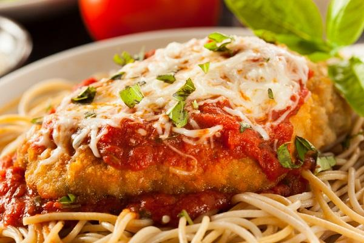

Pollo a la Parmesana

El Pollo a la Parmesana es un clásico de la cocina italiana que ha ganado popularidad en todo el mundo. Su origen se remonta a Italia, donde se conoce como "Pollo alla Parmigiana". Esta receta combina pollo empanizado con salsa de tomate y queso derretido para un plato reconfortante y delicioso.
Ingredientes:
- 4 pechugas de pollo deshuesadas y sin piel
- 1 taza de pan rallado
- 1 taza de queso parmesano rallado
- 1 taza de salsa de tomate
- 1 taza de mozzarella rallada
- 2 huevos batidos
- 2 cucharadas de aceite de oliva
- Sal y pimienta al gusto
- Albahaca fresca (opcional, para decorar)
Instrucciones:
- Precalienta el horno a 180°C (350°F).
- En un tazón, mezcla el pan rallado con la mitad del queso parmesano. Agrega sal y pimienta al gusto.
- En otro tazón, bate los huevos.
- Cubre cada pechuga de pollo con la mezcla de pan rallado, sumérgelas en huevo batido y luego vuélvelas a cubrir con la mezcla de pan rallado para empanizarlas bien.
- Calienta el aceite de oliva en una sartén grande a fuego medio-alto. Cocina las pechugas de pollo empanizadas hasta que estén doradas por ambos lados (aproximadamente 4 minutos por lado).
- Coloca las pechugas de pollo en una bandeja para horno y cubre cada una con una porción de salsa de tomate, mozzarella y el queso parmesano restante.
- Hornea en el horno precalentado durante 20-25 minutos, o hasta que el queso esté dorado y burbujeante.
- Decora con hojas de albahaca fresca si lo deseas.
- Sirve caliente y disfruta de este delicioso Pollo a la Parmesana junto con pasta o una ensalada.
Volver